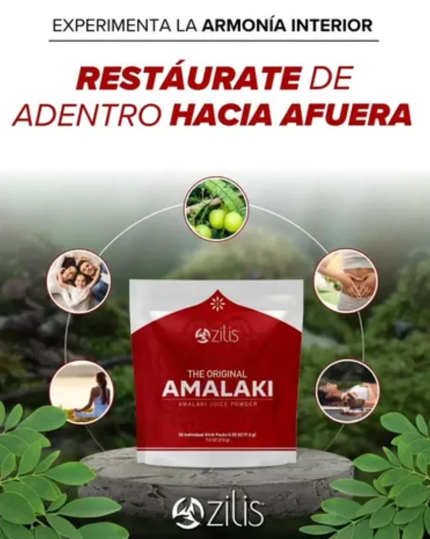
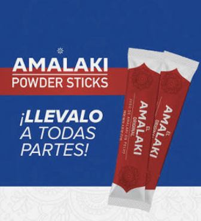

🜁
Equilibra los 3 doshas
Es de las pocas plantas que el Ayurveda considera armonizadoras de Vata, Pitta y Kapha a la vez.
Experimenta la armonía interior
Durante más de dos mil años, la medicina ayurvédica ha llamado al amalaki rasayana: el rejuvenecedor. Hoy lo tomas en un stick, con una mezcla vegana de 7 botánicos. Restáurate de adentro hacia afuera.

+2.000
años de tradición ayurvédica
7
botánicos en sinergia
5
sistemas de medicina tradicional lo usan
30
sticks por bolsa, uno al día
Origen mitológico
El amalaki es sagrado porque la tradición hindú lo considera el primer árbol que apareció en la Tierra, nacido de las lágrimas que Brahma derramó mientras meditaba sobre la creación.
Su nombre en sánscrito significa "la nodriza" o "lo imperecedero", y también se le llama Adiroha, el árbol preeminente. Sus hojas y frutos se ofrecen en rituales dedicados a Shiva y Vishnu, y en muchos hogares de la India se le honra como símbolo de abundancia y vida larga.
"Sarvadosha hara": la que aleja todas las dolencias.
Apodo tradicional del amalaki en la medicina de la India.
🌳
Phyllanthus emblica
Árbol caducifolio de 8 a 18 metros, nativo de las regiones tropicales y subtropicales de Asia: India, Nepal, Sri Lanka y Tailandia. Su fruto es una baya redonda, verde amarillenta, con vetas verticales.
La ciencia medicinal ayurvédica
Que el amalaki sea un rasayana significa que el Ayurveda lo clasifica como una sustancia rejuvenecedora y tónica, orientada a promover la longevidad, la vitalidad y la resistencia del cuerpo frente al estrés.
Su uso está documentado en el Charaka Samhita, uno de los textos clásicos de la medicina ayurvédica, redactado hace más de dos milenios. Es además el ingrediente central del Chyawanprash y uno de los tres frutos del Triphala, junto al haritaki y el bibhitaki.
🜁
Es de las pocas plantas que el Ayurveda considera armonizadoras de Vata, Pitta y Kapha a la vez.
✦
Ácido, dulce, amargo, picante y astringente. Solo le falta el salado, algo excepcional en un solo fruto.
🍋
Es una de las fuentes naturales más concentradas de vitamina C y polifenoles antioxidantes.
☯
Además del Ayurveda, lo usan la medicina Siddha, Unani, tibetana y tradicional china.
The Original Amalaki
The Original Amalaki de Zilis es una bebida en polvo apta para veganos que combina 7 botánicos en sinergia: amalaki, schizandra, jujube, tulsi, haritaki, inulina y jengibre.
Grandes beneficios, pequeña presentación
El Amalaki se toma disolviendo un stick en un vaso de agua fría o en tu bebida favorita, una vez al día, como un pequeño ritual de bienestar.
1
Porción individual, ligera y lista para llevar a todas partes: oficina, gimnasio o viaje.
2
Mézclalo con agua fría, hielo y unas hojas de menta. Un sabor frutal fácil de amar.
3
En el Ayurveda, los rasayanas se toman con constancia. Una bolsa de 30 sticks es tu mes de ritual.

Tienda
Puedes pedir The Original Amalaki en bolsa de 30 sticks y Café Rise, el café arábica colombiano con amalaki, ambos originales de Zilis.
Tu ritual empieza hoy
Escríbeme y te ayudo a elegir tu presentación, te cuento cómo tomarlo y coordinamos tu envío.
"{{T1}}"
"{{T2}}"
"{{T3}}"
Resolvemos tus dudas
El amalaki (Phyllanthus emblica), también llamado amla o grosellero de la India, es el fruto de un árbol nativo del sur de Asia y una de las plantas más veneradas del Ayurveda, donde se clasifica como rasayana: una sustancia rejuvenecedora asociada a la vitalidad y la longevidad.
Se disuelve un stick individual en un vaso de agua fría o en tu bebida favorita y se toma al momento; cada bolsa trae 30 sticks, uno por día. Sigue siempre las indicaciones de la etiqueta del producto.
The Original Amalaki es una mezcla vegana de 7 botánicos: amalaki, schizandra, jujube, tulsi, haritaki, inulina y jengibre.
No, el amalaki es un suplemento alimenticio de tradición ayurvédica y no reemplaza ningún diagnóstico ni tratamiento médico. Si estás embarazada, das de lactar, tomas medicamentos o tienes una condición de salud, consulta primero con tu médico.
Café Rise es una bebida instantánea gourmet de Zilis que combina café arábica 100% colombiano con amalaki y extracto de café verde, en sticks de 3 g.
Haces tu pedido por WhatsApp y coordinamos pago y entrega contigo. Envíos a Lima: {{ENVIO_LIMA}}. Envíos a provincias: {{ENVIO_PROVINCIAS}}. Métodos de pago: {{METODOS_PAGO}}.
Recetas con amalaki, tips de bienestar y promociones exclusivas.